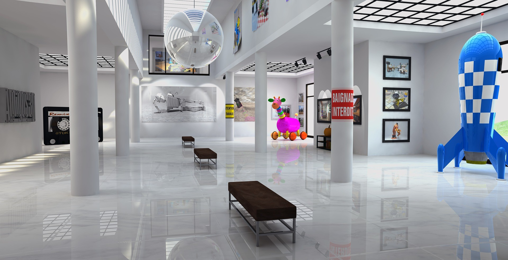

Special Events and Exhibitions
As we embark on this exciting journey through the world of science, the Community Science Museum is thrilled to bring you a series of special events and exhibitions that promise to inspire, educate, and captivate all ages. From thought-provoking lectures by visiting experts in aeronautics to a thrilling 'Night in the Museum' experience that brings science to life after dark, and an exclusive exhibition on loan from the NEMO Science Museum in Amsterdam, we are dedicated to making science accessible and engaging for our community. Join us in exploring the wonders of the universe, understanding the power of the elements, and experiencing the thrill of discovery. It's a time of discovery, adventure, and learning, and we're excited to share it with you.s
Visiting Professor of Aeronautics

It is our pleasure to announce that Prof Sheila Widnall from the Massachusetts Institute of Technology will be delivering 3 lectures on the development of aeronautics and where the future lies in this exciting 'space'.
Night in the Museum

Get your family together for an exciting night in the museum as you sleep over beside dinosaurs and science displays. Bring your own sleeping bag and get ready to rough it as we go exploring the wonders of science.
Energetica Exhibition on Loan
On loan from the NEMO Science Museum in Amsterdam, the Energetica exhibition is coming to the Community Science Museum. It's a series of installations that allow visitors to experience the power of the elements as we harness them. From solar energy powering lighting, to 'Wind Island' that shows how turbines are able to use and control wind to create power.